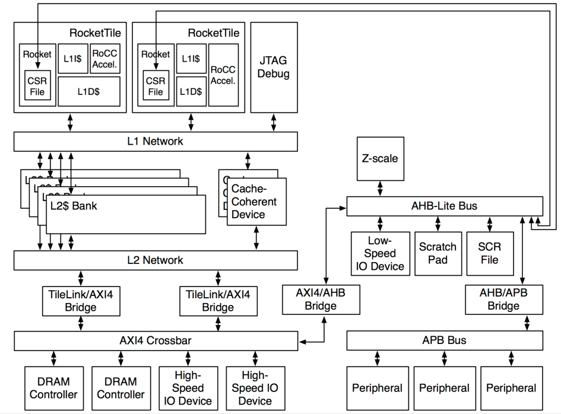

RISC-V 가 주류로 올라설 수 있을까?
4년전, 예전 직장에서 Berkeley 박사과정 한 분을 초청해서 강연을 들었던 기억이 납니다. 강연의 주제는 RISC-V 라는 이전의 RISC 를 계승한 새로운 open architecture 프로세서 였습니다. Computer Architecture의 교과서 책을 집필하신 두 분 (헤네시 스탠포드 총장, 패터슨 버클리대 교수) 중 버클리대의 랩에서 박사과정을 하시던 분이었는데, RISC-V라는 새로운 마이크로프로세서의 설계를 맡으셨던 분이었습니다.
처음 RISC-V라는 말을 들었을 때, '왠 20년가까이 된 이름을 빌려와서 ARM이 지배하는 마이크로프로세서 시장에 발을 담그는 걸까?' 라는 생각이 먼저 들었던 것 이 사실입니다. 시작부터 비판적인 색안경을 끼고 강의를 들었죠.
그러나 강의를 통해 RISC-V의 개발과정을 듣고 있으니, 이게 정말 한 팀이 해낸 일이 맞는지 의심스러울 정도로 방대한 양을 다루고 있었습니다. ISA(Instruction Set Architecture)를 재 정립하는 것은 뭐 그렇다치지만, verilog의 귀찮은 반복작업들이나 기타 단점을 보완하기 위해 chisel이라는 언어를 만든 것, 컴파일러 디버거를 포팅한 것 뿐만아니라 이미 Linux 운영체제까지 올린 것 부터 해서 여러 일을 진행을 했었다고 발표한 것이 기억이 납니다.

정말 대단한 일이죠! 이쪽 업계에 수십년간 몸담아 오셨던 David Patterson 교수님의 지도 아래에 만들어진 프로세서니 충분히 관심을 기울일만한 일이었습니다. 게다가 복잡해져만 가던 ARM 과 대비해서 간결한 ISA는 관심이 갈만한 이야기였습니다.
오늘, 마이크로프로세서를 이용한 Supercomputing을 타겟으로Epiphany SoC나 Parallella Board를 만들었던 Adapteva 의 Andreas Olofsson 이 RISC-V에 관해 쓴 글을 읽었습니다. Andreas는 10가지 근거를 들며 RISC-V를 찬양하는 글을 썼는데요. 조금은 현실과 동떨어진 것 같아서 아쉽습니다.
물론 RISC-V가 나쁘지 않다는 것은 인정하지만, 현재 ARM 이외에 Industry의 요구를 충족하기 위해 나온 여러 마이크로프로세서 (Tensillica, ARC, MIPS 등)가 맥을 추지 못하는 것을 보고 있으니 RISC-V라고 별반 다를 수 있을까.. 하는 생각이 먼저 듭니다.
-
Industry는 화려한 기능보다는 안정성, 검증된 것을 더 선호합니다.
SoC를 개발하면서 가장 크게 느낀 것이라면, 기능의 추가보다 90% 동작가능 상태에서 99.9%의 동작 가능 상태로 끌어올리는 것이 수십배 이상의 노력이 들어간다는 점입니다. Computer Architecture의 책에서도 나오는 이야기 이지만, 오류 없는 디자인을 설계할 수 있다는 것과 오류가 있는 디자인은 제품으로 내보낼 수 없다는 것은 잘못된 생각입니다.
그 말을 RISC-V에 적용해 보자면, RISC-V에는 코어 오류가 없을 수는 없고 (아직 검증이 안된 로직이다보니), 그렇지만 제품으로는 나올 수 있다고 할 수 있겠죠. 다만, 제품으로 나올 때 까지의 각고의 노력을 생각하면, 아직 제대로 검증이 되지 않은 제품을 갑자기 가져다 쓸 간 큰 회사는 별로 없으리라 봅니다. 저렴한 제품에 시험삼아 넣어볼 순 있겠지만, 최신 공정인 28nm나 14nm 공정의 테입아웃 비용을 생각하면 섣불리 해 보기 어렵습니다.
-
개발 환경이 아직 갖춰지지 않았습니다.
ARM의 큰 장점은, 이미 업계에서 검증이 된 코어라는 점입니다. 그리고 그 다음 장점은 훌륭한 개발, 디버깅 툴이 많이 있다는 점입니다. Arm RVDS를 필두로 여러 종류의 IDE 가 있고, T32를 비롯한 강력한 디버깅 도구가 ARM 코어를 기반으로 하고 있습니다. 하지만 RISC-V로는 gcc 크로스 컴파일러가 있고 아직 IDE는 전무합니다. 뭐 개발에 IDE를 쓰는건 아니니 (여전히 SourceInsight의 막강한 기능을 쓰시는 분이 많죠) 그 부분은 넘어갈 수 있지만 디버깅 도구가 GUI로 제대로 된 것이 없다는 게 가장 문제가 크네요.
-
코어가 Scala 기반의 Chisel 언어로 되어있습니다.
1번 문제와 관련이 있는데, 아직 제대로 칩에서 검증이 되지 않은 모듈이라면, 반드시 ECO (Engineering Change Order)를 해야할 상황에 부딫힙니다. 이때 RTL을 어떻게 디자인 해 두었느냐에 따라 ECO를 통한 수정이 쉬울지, 아니면 아예 불가능할 지 결정이 됩니다. 이러한 경험이 기반이 되어 하드웨어 설계시 최대한 수정하기 쉽게 RTL을 기술하곤 합니다.
그러나 Chisel로 만들어진 코드를 verilog로 변환하면 verilog 로직을 이해하지 않는 이상 수정이 쉽지가 않습니다. 디자이너야 어떻게든 변환되는 부분을 이해하겠지만, 그렇지 못한, 가져다 사용하는 사람에게는 verilog를 충분히 이해하지 않으면 수정할 엄두조차 내지 못하는 상황이 됩니다.
-
BSD 라이센스입니다.
이건 장점이자 단점인데요. BSD 라이센스는 공개된 코드를 수정하더라도 다시 공개할 의무가 없습니다. 그 말은 필연적으로 다양한 branch가 만들어질 수 있다는 것을 의미합니다. 게다가 그 branch가 main stream으로 합쳐질 리 없는 수 많은 곁가지, leaf node로 끝나버립니다. 특히나 customizable microprocessor를 표방하면서 수정을 적극 권장하는 RISC-V에게는요.
이게 RISC-V 가 바뀌지 않고 유지된다면 그다지 문제가 되지 않을 지 모릅니다. 그러나 UC Berkeley 팀에서 새로운 버전의 ISA를 내놓는다면, 각자 회사의 변경점이 반영될 리 만무하고, 각 회사는 다시 새로운 Architecture 위에서 이전의 변경점을 추적해서 반영해야 한다는 걸 의미합니다. (만일 회사가 새 RISC-V를 받아들일 생각이라면요) 이런 이유를 생각할 만한 회사라면 아마 RISC-V를 수정하지 않고 사용할 겁니다.
제가 안 좋은 이야기만 줄줄 쓴 것 같은데, 사실 RISC-V가 나온 소식을 듣고 환영을 했었네요. 그 많지 않은 인원으로 이뤄낸 여러 일을 보면서 대단한 능력자들이 모였구나, 라는 생각도 들고 아직 실력이 부족한 절 돌아보며 한숨을 쉬기도 했었습니다. 아무래도 지금의 절 돌아봐도 그때의 RISC-V 팀 일원이 될만한 능력이 없거든요. 그만큼 그 팀이 땀을 흘려가며 만들어낸 결과물은 이쪽 하드웨어 업계를 떠들썩하게 할만한 뉴스였습니다.
관심밖으로 사라지지 않고 다시 RISC-V 이야기가 들려와서, 한때 프로세서 디자이너를 꿈꿨던 저는 무척이나 반갑습니다. 아직 제게는 해소되지 않는 많은 우려가 있지만, 그 모든 우려를 씻어내고, 나중에 '제가 잘못 생각했었네요' 라고 말할 수 있게 RISC-V가 퍼지길 바랍니다.
Reference
- Open Source RISC-V Core Designs, Why Google Cares and Why They Matter
- RISC-V in Wikipedia
- ZScale: 32bit RISC-V